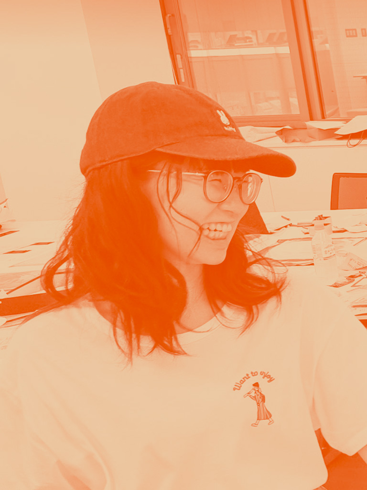

境 美月
Sakai Mitsuki代表 / Graphic Designer
北海道在住。函館生まれ、千歳育ち。
札幌市立大学デザイン学部デザイン学科卒業。
自身のデザイン観である「親しみやすさと遊び心、それを支える確かな論理的根拠」を学術的・実践的に立証した研究で札幌市立大学デザイン学部 人間情報デザインコース 卒業研究最優秀賞を受賞。
趣味は絵日記を描くことで、日常の些細な「おもしろい」を見つけては絵日記にして友人に見せびらかしている。


代表 / Graphic Designer
北海道在住。函館生まれ、千歳育ち。
札幌市立大学デザイン学部デザイン学科卒業。
自身のデザイン観である「親しみやすさと遊び心、それを支える確かな論理的根拠」を学術的・実践的に立証した研究で札幌市立大学デザイン学部 人間情報デザインコース 卒業研究最優秀賞を受賞。
趣味は絵日記を描くことで、日常の些細な「おもしろい」を見つけては絵日記にして友人に見せびらかしている。